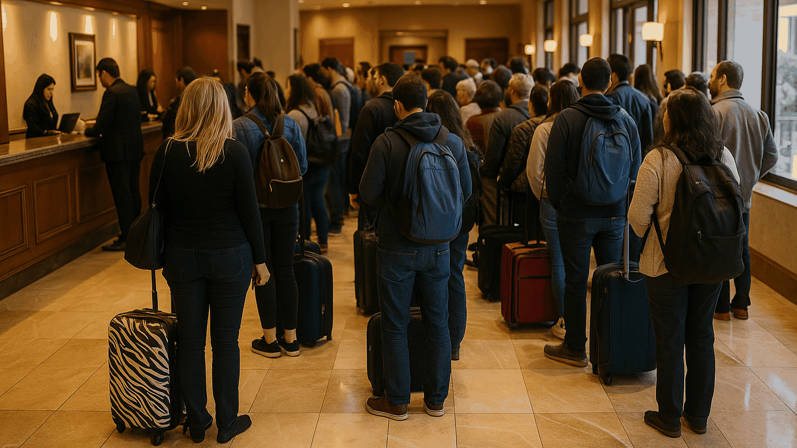
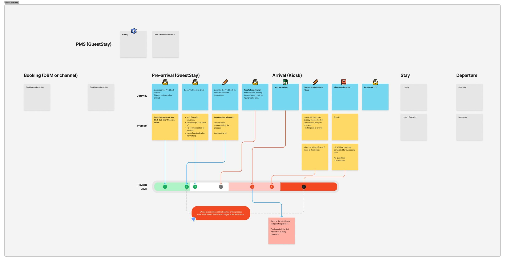
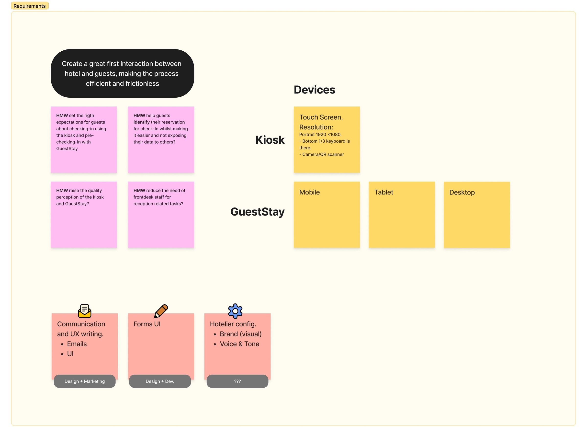
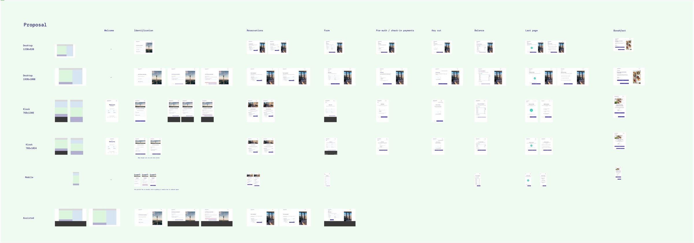
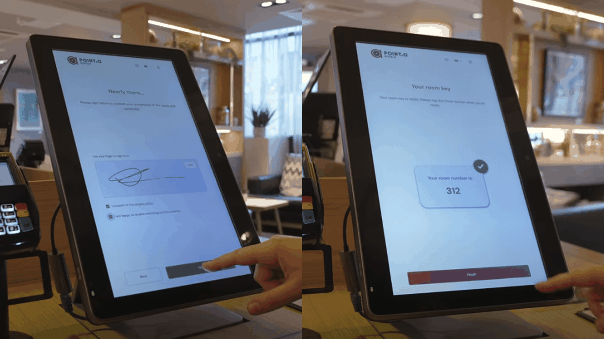
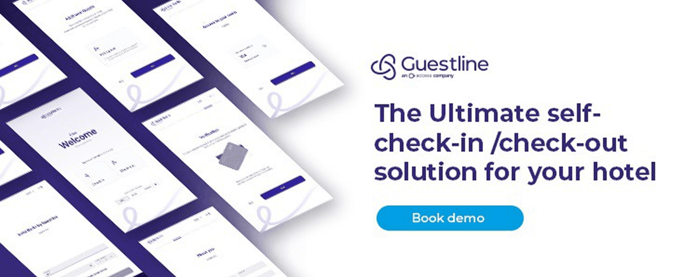

GuestStay Kiosk
Convertir un piloto validado en un kiosco de autoservicio escalable y white-label para hoteles. Colas más cortas para los huéspedes y nuevos ingresos por ventas adicionales para los hoteleros.

De un vistazo
El problema
Largas colas en recepción y un kiosco piloto que hacía repetir pasos a los huéspedes y no generaba ingresos extra a los hoteles.
Mi rol
Única diseñadora de producto, de principio a fin: auditoría del recorrido, análisis de competencia, flujos, UI y un sistema de diseño white-label. Con un PM, un dev lead y 6 ingenieros.
Impacto
Check-in un 35% más rápido, el uso del autoservicio se duplicó hasta el 50%, un 20% de conversión en ventas adicionales y la mitad de intervenciones del personal.
Habilidades
Resultados
35%
check-in más rápido, de unos 7 a 4,5 min
2x
uso del autoservicio, hasta el 50%
20%
conversión media en ventas adicionales
50%
menos intervenciones del personal
Contexto
Guestline había hecho un piloto de kiosco que demostró dos cosas: a los huéspedes les gusta hacer el check-in solos, y el kiosco puede conectarse con el sistema de gestión del hotel. Pero el piloto tenía problemas reales. Los huéspedes repetían datos que ya habían dado, los pasos opcionales estaban escondidos, no había ventas adicionales y las colas seguían ahí.
El objetivo era convertirlo en un producto que Guestline pudiera vender a cualquier hotel: con su marca, accesible, más rápido para los huéspedes y una fuente de ingresos para los hoteleros.

Qué descubrí
Audité todo el recorrido del huésped, desde la reserva hasta la llegada y la salida, y analicé cómo resolvía la competencia el check-in autónomo. Destacaron tres cosas:
- Promesas rotas. Los emails antes de la llegada prometían un check-in más rápido, y luego los huéspedes tenían que repetir los mismos pasos en el kiosco.
- Fricción física. Los kioscos estaban demasiado altos y el teclado en pantalla ocupaba un tercio de la pantalla.
- Costes ocultos para los hoteles. El personal perdía tiempo resolviendo problemas del kiosco, y los hoteleros no tenían datos para demostrar el ROI.
La mayoría de kioscos de la competencia solo digitalizaban el formulario de check-in. Muy pocos ofrecían ventas adicionales, marca propia o una accesibilidad real, y ahí vimos nuestra oportunidad.


Qué hice
Definí cuatro principios para el rediseño y los usé para tomar cada decisión:
- Claridad. Indicadores de progreso, validación en línea y lenguaje claro.
- Autonomía. Datos ya rellenados, pasos opcionales transparentes y ventas adicionales modulares.
- Accesibilidad. Zonas táctiles grandes, alto contraste, tipografía que cumple WCAG y menos carga cognitiva.
- Adaptación a la marca. Un sistema white-label en el que cada hotel define su logo, colores y tipografía.
El check-in pasó de 8 a 10 pantallas fragmentadas a 4 pasos. El check-out quedó en revisar el saldo, pagar si hace falta, confirmar y recibir un recibo digital o un pase para el wallet, en un minuto aprox. si no hay nada pendiente. El diseño funciona en kiosco, tablet, móvil y escritorio, y comparte un único sistema de diseño con el Guest Portal y el motor de reservas.



Resultados
- Tiempo de check-in un 35% menor aprox., de unos 7 minutos a 4,5
- Check-out en 1 minuto aprox. sin saldo pendiente, antes unos 5
- El uso del autoservicio se duplicó hasta el 50%
- La satisfacción de los huéspedes subió un 35% aprox.
- La conversión media en ventas adicionales fue del 20%
- Las intervenciones del personal se redujeron a la mitad
- El 45% de los huéspedes eligió recibo digital o pase para el wallet
En Classik Hotel Collection en Berlín, el primer hotel alemán en usar el kiosco, el 100% de los huéspedes lo usaba voluntariamente en cuatro semanas, y el grupo encargó más unidades. Point A Hotels en Reino Unido captó 3.000 emails de huéspedes en 90 días.

Próximos pasos
El kiosco es ahora una pieza de un ecosistema conectado con el Portal y el motor de reservas. El siguiente paso que planteamos fue la personalización con IA, como ofrecer un check-out más tarde cuando el vuelo de un huésped se retrasa, u ofertas de mejora a medida.
Siguiente proyecto
Rebranding de BeInCrypto →